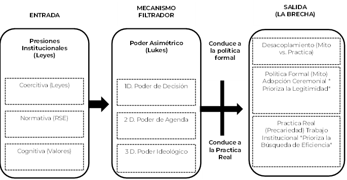

Resumen.
El propósito es analizar la persistencia del desacoplamiento institucional en el ámbito laboral, es decir, la brecha entre los compromisos de Responsabilidad Social Empresarial y la práctica real del Trabajo Decente. Se sostiene que la vulneración de derechos no se explica únicamente por la búsqueda de eficiencia, sino por la acción deliberada del poder que permite a las organizaciones adoptar estructuras formales. Se busca superar las tendencias degenerativas del neoinstitucionalismo que simplifican la agencia y la estructura. La metodología que se usa es una revisión de literatura exploratoria que integra la Teoría Institucional, la Elección Racional y la Teoría del Poder. El análisis demuestra que el desacoplamiento es un ejercicio de poder asimétrico sostenido por la adopción ceremonial de estructuras. Se concluye que el poder de agenda y, fundamentalmente, el poder ideológico son los motores que naturalizan la precariedad, ofreciendo un aporte a la gestión de la sustentabilidad social y la coherencia empresarial.
Palabras clave:
desacoplamiento; trabajo decente; teoría institucional; responsabilidad social; poder organizacional.
Abstract.
The purpose is to analyze the persistence of institutional decoupling in the labor field, that is, the gap between Corporate Social Responsibility (CSR) commitments and the actual practice of Decent Work. It is argued that the violation of rights is not solely explained by the pursuit of efficiency, but rather by the deliberate action of power that allows organizations to adopt formal structures. The aim is to overcome the degenerative tendencies of neo-institutionalism that simplify agency and structure. The methodology used is an exploratory literature review that integrates Institutional Theory, Rational Choice, and Power Theory. The analysis demonstrates that decoupling is an exercise of asymmetric power sustained by the ceremonial adoption of structures. It is concluded that agenda power and, fundamentally, ideological power are the drivers that naturalize precariousness, offering a contribution to the management of social sustainability and corporate coherence.
Keywords:
decoupling; decent work; institutional theory; social responsibility; organizational power.
Introducción
La administración moderna reconoce que el Trabajo Decente constituye un imperativo social y ético que trasciende la mera relación económica (Atencio, Arrias, Coronel, y Ronquillo, 2020). Este reconocimiento impulsa a las organizaciones a adoptar compromisos formales con la Responsabilidad Social Empresarial (RSE) y la Sustentabilidad Social, asumiendo políticas que se alinean con los estándares globales.
En este sentido, la Teoría Institucional establece que las empresas están sujetas a presiones isomórficas que las obligan a mimetizar estructuras para parecer legítimas (DiMaggio y Powell, 1983); sin la adopción de estas estructuras, la organización enfrenta la inminente pérdida de legitimidad (Suchman, 1995). A pesar de este impulso formal, la persistencia de la precariedad laboral a nivel global sugiere una falla en la implementación, lo que nos dirige al fenómeno del desacoplamiento.
Sin embargo, esta presión social se contrapone a la racionalidad económica, la cual busca constantemente maximizar el provecho de los recursos disponibles (García-Ruiz, 1999). El conflicto entre el deber ser social y el interés propio empresarial se manifiesta en una brecha persistente entre la política formal (la promesa de RSE) y la práctica real de los derechos laborales. Esta discrepancia se ha denominado desacoplamiento institucional, un fenómeno donde las estructuras formales se adoptan como mito y ceremonia para obtener legitimidad externa, sin alterar las rutinas operacionales internas (Meyer y Rowan, 1977).
El presente artículo se delimita a la articulación de tres marcos: la Teoría Institucional (NIS), la Teoría de la Elección Racional y la Teoría del Poder (Lukes, 2005), con el fin de explicar dicha incoherencia. Para evitar las tendencias degenerativas de la literatura institucional tradicional —que suele simplificar la relación entre agencia y estructura al enfocarse excesivamente en la adaptación pasiva (Modell, 2022) —, este trabajo busca llenar dicho vacío argumentando que las formulaciones iniciales del NIS subestimaron el papel central del conflicto y el poder como mediadores (Greenwood, Oliver, Sahlin, y Suddaby, 2008). Así, la perspectiva radical de Lukes (2005) emerge como la herramienta idónea para analizar la manipulación activa de la agenda y la ideología que sostienen la brecha de la precariedad laboral.
Por lo tanto, la contribución esperada de este análisis es doble: primero, ofrecer una síntesis teórica multinivel que supere el determinismo estructural del NIS; y segundo, proporcionar un marco conceptual para analizar la coherencia empresarial en RSE, fundamental para la gestión de la sustentabilidad social. Con base en lo expuesto, el objetivo de este trabajo es determinar la capacidad analítica de la interacción entre la Teoría Institucional, la Teoría de la Elección Racional y la Teoría del Poder para explicar los mecanismos causales que permiten y sostienen el desacoplamiento institucional en las prácticas laborales.
Este trabajo se diferencia de las aproximaciones previas al desacoplamiento institucional, tales como la propuesta seminal de Oliver (1991) o las lecturas críticas recientes centradas en la legitimidad simbólica, en que introduce una perspectiva multinivel que articula la racionalidad económica, la legitimidad institucional y el poder asimétrico como mecanismos causales interdependientes. A diferencia de los modelos clásicos que explican el desacoplamiento como una respuesta adaptativa o pasiva a las presiones externas, este estudio lo conceptualiza como un ejercicio deliberado de poder organizacional, orientado a gestionar la coherencia aparente entre el discurso normativo y la práctica real. De este modo, la novedad teórica del trabajo reside en la integración del marco de Lukes (2005) dentro del análisis institucional, permitiendo observar el desacoplamiento no solo como un fenómeno estructural, sino también como una estrategia política de gestión de la legitimidad.
Este análisis está guiado por dos preguntas de investigación que orientan la revisión de la literatura: ¿Cómo el ejercicio del poder asimétrico (Lukes, 2005) se articula con las presiones isomórficas (DiMaggio y Powell, 1983) para explicar la adopción ceremonial (Meyer y Rowan, 1977) de políticas de Responsabilidad Social en el ámbito laboral? Y ¿En qué medida el poder de agenda y el poder ideológico (Lukes, 2005) sostienen activamente la brecha (desacoplamiento) entre la política formal y la práctica real en la gestión de la sustentabilidad social?
El artículo se fundamenta en una aproximación metodológica de naturaleza teórico-bibliográfica de tipo cualitativo. Esta selección obedece al propósito central de la investigación, el cual es la integración conceptual y la construcción de un marco analítico que permita explicar un fenómeno complejo. Se sigue un enfoque propio de la investigación que busca construir teoría a partir de la articulación rigurosa de marcos diversos (Eisenhardt, 1989).
Para garantizar transparencia y rigor en la revisión teórica, se definieron criterios claros para seleccionar las fuentes del marco conceptual. En total, se analizaron aproximadamente cuarenta fuentes académicas de carácter indexado, priorizando artículos de alto impacto y obras fundacionales vinculadas con la Teoría Institucional, la Teoría de la Elección Racional y la Teoría del Poder. La búsqueda se desarrolló en bases especializadas —Scopus, Web of Science y Scielo—; se emplearon combinaciones de palabras clave asociadas a desacoplamiento institucional, trabajo decente y poder organizacional. Asimismo, se aplicaron criterios de inclusión relacionados con la relevancia teórica, la coherencia conceptual y la actualidad (últimos diez años), se excluyeron los textos de carácter divulgativo o carentes de respaldo empírico. Este procedimiento garantizó que las fuentes seleccionadas respondieran a la lógica de integración teórica multinivel que orienta el presente trabajo.
El proceso se concretó en una revisión de literatura exploratoria y dirigida, centrada en la articulación de tres cuerpos teóricos fundamentales: la Teoría Institucional (NIS), la Teoría de la Elección Racional y la Teoría del Poder (Lukes, 2005). El objetivo metodológico de esta revisión fue construir un marco analítico que integre de manera rigurosa el papel central del conflicto y el poder como mecanismos causales.
El análisis resultante consiste en la síntesis e interacción de estos marcos, con el fin de determinar los mecanismos causales que permiten y sostienen activamente el desacoplamiento institucional en las prácticas laborales. El resultado final de este ejercicio es la proposición de un Modelo Conceptual (Figura 1) y una Tabla de Mecanismos Causales (Tabla 1), que buscan dotar al estudio de la sustentabilidad social de una hipótesis de rango medio robusta y lista para ser sometida a prueba empírica en futuras investigaciones.
El desarrollo del artículo está organizado en secciones secuenciales. Después de esta introducción, la sección comienza con la aproximación metodológica de revisión bibliográfica; posteriormente, desarrolla los tres argumentos conceptuales clave: la tensión entre la presión institucional y la legitimidad, el conflicto entre racionalidad y agencia, y el papel determinante del poder como mecanismo de desacoplamiento. Finalmente, presenta una reflexión crítica sobre las fortalezas y limitaciones del modelo teórico, y concluye con las implicaciones y el aporte central de este análisis.
Análisis y Discusión Conceptual: El Mecanismo de la Brecha
Presión Institucional y el Imperativo de la Legitimidad
El estudio de las organizaciones en la época moderna no se restringe únicamente al examen de la racionalidad económica o la eficiencia interna, sino que requiere una profunda consideración del entorno cultural y normativo que las moldea. En este contexto, la presión institucional emerge como un mecanismo que orienta los procesos decisorios de las entidades hacia la conformidad, estableciendo un imperativo de la legitimidad como condición esencial para la supervivencia.
Las instituciones, entendidas como las "reglas del juego" que estructuran la interacción humana (North, 1990), determinan un marco de actuación que impulsa a las organizaciones a adoptar estructuras y prácticas socialmente aceptadas. Por lo tanto, el marco institucional desempeña una función importante en el rendimiento de una economía, trascendiendo la lógica puramente transaccional (North, 1990).
En este sentido, la teoría institucional moderna, desarrollada por autores clave, explica la uniformidad observada en los campos organizacionales a través del concepto de isomorfismo. DiMaggio y Powell (1983) postulan que la estructura formal de las organizaciones converge no solo por la competencia, sino por una necesidad de imitar o de ajustarse a las expectativas externas.
Este isomorfismo, que puede ser coercitivo, mimético o normativo, fuerza a las entidades a asemejar sus características a aquellas que el entorno considera apropiadas (De Freitas y Da Silveira, 2021). Además, esta necesidad de conformidad se vincula intrínsecamente con la idea de que la estructura formal de las organizaciones institucionalizadas funciona a menudo como un mero "mito y ceremonia", más que como una expresión de la eficiencia técnica real (Meyer y Rowan, 1977).
El núcleo de esta dinámica reside en el imperativo de la legitimidad. Mark Suchman (1995) identifica la legitimidad organizacional como la percepción o asunción generalizada de que las acciones de una entidad son deseables, adecuadas o apropiadas dentro de un sistema de normas, valores, creencias y definiciones socialmente construidas.
De forma más específica, la legitimidad se manifiesta en tres formas: pragmática, basada en el autointerés de la audiencia; moral, fundamentada en la aprobación normativa; y cognitiva, ligada a la comprensibilidad y la condición de dar por sentada la existencia y funcionamiento de la organización (Suchman, 1995). Consecuentemente, la búsqueda de este reconocimiento social se convierte en una estrategia fundamental para garantizar el flujo de recursos y la estabilidad.
El foco en la legitimidad confronta la visión clásica de la racionalidad. García (1999) indica que, tradicionalmente, la racionalidad se asocia con "la capacidad para obtener el máximo provecho de los recursos o, como dice H. Simón, a la capacidad para resolver problemas siguiendo el camino más corto" (García-Ruiz, 1999), vinculando la racionalidad con la eficiencia económica.
Sin embargo, en un entorno institucionalizado, la adopción de prácticas legitimadas a menudo se impone sobre la consideración estricta de la eficiencia. Un ejemplo de esta tensión se observa en el ámbito empresarial moderno, donde las organizaciones se encuentran en la interacción entre las presiones institucionales, que exigen prácticas socialmente responsables como la observancia de los derechos laborales, y los procesos decisorios internos, que priorizan la eficiencia y la competitividad (Alcívar-Pinto, 2025). De esta forma, la legitimidad institucional opera como una restricción o una guía que complejiza la toma de decisiones.
Finalmente, la perspectiva institucional, consolidada a lo largo del tiempo (Greenwood et al., 2008), demuestra que las organizaciones son estructuras sociales profundamente arraigadas en el orden cultural y normativo. El éxito de una entidad no reside solo en su capacidad de ser rentable, sino en su habilidad para ser percibida como justa, adecuada y necesaria por su entorno. De este modo, la presión institucional no representa un mero obstáculo externo, sino una fuerza constitutiva que define la forma y el propósito de la vida organizacional, transformando la legitimidad en el valor primordial que orienta el cambio y asegura la permanencia.
Racionalidad, Eficiencia y la Agencia del Desacoplamiento
El desacoplamiento es la respuesta a la tensión inherente entre las diversas lógicas institucionales que configuran el campo organizacional. Por un lado, se encuentra la lógica del mercado o rentabilidad, la cual impulsa de manera prioritaria a las organizaciones a buscar la eficiencia y la minimización de costos, una perspectiva que se alinea con la Teoría de la Elección Racional (North, 1990).
No obstante, es crucial reconocer que la Teoría de la Elección Racional se ve limitada por su enfoque en la racionalidad perfecta, lo cual ignora la complejidad social y la naturaleza inherentemente restringida de la acción humana (Bunge, 1995). Por otro lado, la lógica ética o social impone el respeto al Trabajo Decente y la gestión responsable. El conflicto estructural se materializa cuando la implementación efectiva de los derechos laborales se evalúa internamente como una limitación directa a la eficiencia económica.
Desde una perspectiva weberiana, este conflicto puede comprenderse como la colisión entre la racionalidad instrumental —orientada a la maximización de medios y resultados— y la racionalidad sustantiva, que obedece a valores y fines éticos (Weber, 2002). En la práctica, las organizaciones oscilan entre ambas racionalidades para sostener su legitimidad.
Esta tensión genera decisiones ambivalentes, donde la eficiencia técnica tiende a imponerse sobre los valores institucionales. Habermas (1998) advierte que cuando el sistema económico coloniza el mundo de la vida, la acción comunicativa y el consenso ético se debilitan, transformando la legitimidad en una formalidad vacía. Así, el desacoplamiento refleja la sustitución del diálogo ético por la lógica de la eficiencia, un síntoma de la colonización del sistema económico sobre las normas sociales.
La brecha entre la norma y la práctica se mantiene activamente gracias a la agencia organizacional, la cual dista de ser pasiva. Por el contrario, requiere del trabajo institucional (Lawrence y Suddaby, 2006) para sostener el desacoplamiento. Este trabajo consiste en acciones deliberadas y estratégicas de los actores para mantener la separación entre la política declarada y la práctica operativa.
En este marco, la agencia no solo actúa en función de intereses económicos, sino que también opera como una construcción cognitiva y moral. Los actores organizacionales justifican su comportamiento mediante narrativas racionalizadoras (“cumplimos con lo posible”, “seguimos los estándares internacionales”) que les permiten sostener la identidad institucional sin alterar la estructura real. Así, la agencia se convierte en el vehículo que traduce la racionalidad instrumental en legitimidad aparente, haciendo del desacoplamiento una práctica sostenida por la justificación moral del incumplimiento.
Para ilustrar esta dinámica en un contexto contemporáneo, el modelo de negocio de ciertas plataformas digitales de entrega resulta particularmente revelador. En este sector, las organizaciones suelen promover un discurso público de 'flexibilidad', 'autonomía' y 'emprendimiento' que legitima su modelo ante la sociedad y los inversores, actuando como mito y ceremonia. Sin embargo, en la práctica operativa, los algoritmos de asignación y las tarifas configuran una relación laboral asimétrica que evade regulaciones formales y traslada los riesgos operativos al trabajador. Así, el poder organizacional silencia activamente las discusiones sobre seguridad social o derechos laborales priorizando la eficiencia financiera sobre la sustentabilidad social.
Este proceso se logra, por ejemplo, redefiniendo de manera sutil los límites de la Responsabilidad Social Empresarial o manipulando las percepciones sobre lo que constituye el cumplimiento. Así, el desacoplamiento se concibe como una estrategia activa que emerge de la intersección de lógicas institucionales contradictorias (Thornton, Ocasio, y Lounsbury, 2015), donde el actor organizacional asume la responsabilidad de filtrar y justificar la priorización de la lógica de la rentabilidad sobre la social.
De este modo, la racionalidad del desacoplamiento no es irracional, sino selectivamente racional: elige qué valores sostener según la conveniencia del contexto. Este tipo de racionalidad “estratégica” busca preservar simultáneamente la eficiencia interna y la legitimidad externa, configurando lo que March y Olsen (1989) denominaron una “lógica de la conveniencia institucional”. Tal lógica permite que las empresas mantengan un discurso normativo alineado con los derechos laborales, mientras internamente optimizan sus recursos mediante prácticas precarizadoras.
El análisis de la agencia resulta fundamental, puesto que las tendencias degenerativas en la investigación institucional a menudo provienen de un énfasis unilateral, ya sea en el papel de las instituciones preexistentes o, a la inversa, en la agencia humana (Modell, 2022). La integración de ambos polos es lo que permite visualizar el desacoplamiento como el resultado de la decisión organizacional. Por consiguiente, la elección de adoptar ceremonialmente una estructura para garantizar la legitimidad (Meyer y Rowan, 1977) se justifica internamente mediante la racionalidad económica, pero es sostenida por la agencia que activamente evita los costos de la implementación real.
En síntesis, la racionalidad, la eficiencia y la agencia del desacoplamiento conforman un triángulo analítico donde cada vértice sostiene al otro: la racionalidad define el marco justificativo, la eficiencia determina el incentivo operativo y la agencia ejecuta la estrategia de separación. Este triángulo explica por qué la brecha entre la política formal y la práctica real no es un error de implementación, sino una arquitectura deliberada del poder organizacional.
El Papel Determinante del Poder en el Mantenimiento de la Brecha
El mecanismo fundamental que faculta a las organizaciones para gestionar el conflicto entre la legitimidad y la eficiencia, y para sostener activamente el desacoplamiento, es el poder asimétrico. La Teoría Institucional, en sus formulaciones iniciales, limitó su capacidad de explicar el cambio o la inercia debido a que no integró de manera sistemática el papel del poder y el conflicto como fuerzas estructurantes (Greenwood et al., 2008). Por esta razón, el análisis se apoya en la perspectiva radical de Steven Lukes (2005), la cual concibe el poder en tres dimensiones, cada una de ellas actuando como un motor que perpetúa la brecha de coherencia.
En primer lugar, el poder de decisión (la primera dimensión) se manifiesta a través de acciones explícitas que priorizan la rentabilidad (Lukes, 2005). Esto se observa en las elecciones gerenciales que favorecen, por ejemplo, modelos de contratación precarios o la simulación contractual, aun a costa de la normativa laboral. Esta manifestación del poder asegura que la maximización del provecho económico (North, 1990) se concrete en la práctica.
En segundo lugar, el poder de agenda (la segunda dimensión) opera de manera más sutil, ejerciendo la capacidad de silenciar o desviar los temas críticos de Trabajo Decente (tales como la formalización laboral o la mejora salarial) de la discusión formal dentro de la gerencia (Lukes, 2005). Este poder limita el alcance de las presiones isomórficas (DiMaggio y Powell, 1983), garantizando que las políticas formales adoptadas solo aborden temas cómodos para la dirección y que los costos asociados a una implementación real no lleguen a la mesa de decisiones.
Finalmente, el poder ideológico (la tercera dimensión) es el más profundo y estructural (Lukes, 2005). Este poder se refiere a la capacidad de moldear las percepciones, las creencias y las expectativas, logrando la naturalización de condiciones precarias. Se ejerce a través de narrativas empresariales que presentan la vulneración de derechos como "sacrificios necesarios" para la supervivencia del negocio, o como parte ineludible de una "cultura de esfuerzo" (Lukes, 2005).
Este proceso logra que los propios trabajadores interioricen la brecha y la consideren legítima o inevitable. En síntesis, las tres dimensiones del poder actúan como un sistema de filtrado robusto, permitiendo a la organización mantener la fachada de RSE (legitimidad) mientras prioriza la eficiencia económica sin confrontación interna.
En esta dinámica, el poder ideológico desempeña un papel especialmente persistente, al reconfigurar los marcos cognitivos mediante los cuales los actores interpretan la desigualdad como algo natural o incluso funcional. De este modo, el poder no solo disciplina la acción, sino también el pensamiento, consolidando estructuras simbólicas que refuerzan la obediencia organizacional. En consecuencia, el desacoplamiento deja de ser una anomalía para convertirse en un componente estructural del orden institucional contemporáneo, donde la legitimidad aparente se sostiene a través de la aceptación social del conflicto y la precariedad.
A continuación, la Tabla 1 sintetiza los mecanismos causales propuestos que explican la interacción entre las lógicas institucionales y las tres dimensiones del poder asimétrico que sostienen el desacoplamiento:
Tabla 1
Mecanismos del Poder Asimétrico en el Proceso de Desacoplamiento Institucional
| Presión Institucional (Fuente Externa) | Mecanismo de Poder (Dimensión Lukes) | Lógica Organizacional Interna | Resultado: Manifestación del Desacoplamiento |
|---|---|---|---|
| Coercitiva (Leyes, OIT, Fiscalización) | Poder de Decisión (1D: Elecciones Explícitas) | Racionalidad Instrumental y Búsqueda de Eficiencia (North, 1990) | Adopción Ceremonial de Políticas (Mito y Ceremonia; (Meyer y Rowan, 1977)) |
| Normativa (Códigos de Ética, RSE, ONGs) | Poder de Agenda (2D: Control de la Discusión) | Trabajo Institucional Activo (Lawrence y Suddaby, 2006) | Silenciamiento de Temas Sensibles (ej. precariedad, bajos salarios) |
| Cognitiva (Valores, Creencias sociales) | Poder Ideológico (3D: Moldeamiento de Percepciones) | Gestión de la Legitimidad (Suchman, 1995) | Naturalización de la Brecha (Es el precio por tener empleo; Lukes, 2005) |
Nota: Elaboración propia a partir de la integración de la Teoría Institucional (Risi, Vigneau, Bohn y Wickert, 2023), la Teoría de la Elección Racional (North, 1990) y la Teoría del Poder (Lukes, 2005). Copyright 2023 por Wiley-Blackwell, 1990 por Cambridge University Press y 2005 por Palgrave Macmillan.
La tabla articula que, ante cada tipo de Presión Institucional (coercitiva, normativa o cognitiva), la organización responde ejerciendo una dimensión específica del Poder Asimétrico (decisión, agenda o ideológico). Este ejercicio de poder se fundamenta en una Lógica Interna que prioriza la eficiencia o la legitimidad, lo cual se traduce en un Resultado concreto del desacoplamiento (adopción ceremonial, silenciamiento de temas o naturalización de la brecha).
De este modo, la tabla permite visualizar cómo el poder opera como un mecanismo filtrador que selecciona qué presiones institucionales serán internalizadas y cuáles serán neutralizadas en el proceso decisorio. Esta lectura ofrece una comprensión más precisa de la coherencia aparente que las organizaciones proyectan hacia el entorno, al tiempo que revela la intencionalidad política que subyace en la gestión de la legitimidad.
Para complementar la síntesis tabular, la figura 1 ofrece una representación visual del flujo propuesto, ilustrando la dinámica causal del desacoplamiento.

Figura 1. Modelo Conceptual del Desacoplamiento medido por el poder asimétrico Nota: Elaboración propia a partir de “Institutional Theory-based Research on Corporate Social Responsibility: Bringing Values Back In”, por D. Risi, L. Vigneau, S. Bohn y C. Wickert, 2023, International Journal of Management Reviews, 25 (1), p. 3; Institutions, Institutional Change and Economic Performance, por D. C. North, 1990, Cambridge University Press; y Power: A Radical View (2nd ed.), por S. Lukes, 2005, Palgrave Macmillan. Copyright 2023 por Wiley-Blackwell, 1990 por Cambridge University Press y 2005 por Palgrave Macmillan.
En el diagrama, el flujo conceptual parte de la Entrada de las Presiones Institucionales (isomorfismo), que inciden en el Mecanismo Filtrador del Poder Asimétrico (Lukes). Este mecanismo, al operar en sus tres dimensiones, media la respuesta organizacional, generando la Salida del Desacoplamiento: una divergencia sistémica entre la Política Formal (orientada a la Legitimidad) y la Práctica Real (orientada a la Eficiencia y marcada por la precariedad).
Reflexión Crítica: Fortalezas, Limitaciones y Oportunidades del Estudio
El presente trabajo, como toda contribución académica, posee un conjunto de fortalezas y limitaciones que son cruciales exponer, pues guían las oportunidades para la investigación futura. La principal fortaleza de esta aproximación conceptual reside en la integración teórica multinivel propuesta.
Al articular el Neoinstitucionalismo Sociológico con la Teoría de la Elección Racional y, de manera determinante, con la perspectiva tri-dimensional del poder de Lukes (2005), se ofrece un marco analítico capaz de superar el determinismo estructural. Esto permite conceptualizar el desacoplamiento no como una simple adaptación pasiva, sino como un ejercicio activo y estratégico de poder que gestiona la coherencia (Risi, Vigneau, Bohn, y Wickert, 2023)
Sin embargo, el diseño metodológico de este artículo de revisión teórica impone una limitación inherente: la ausencia de evidencia empírica directa. El trabajo se fundamenta en la interpretación conceptual de marcos existentes (Eisenhardt, 1989), lo cual, si bien garantiza la solidez teórica, requiere de validación en contextos organizacionales reales.
Esta limitación se relaciona con las advertencias sobre las tendencias degenerativas en la investigación institucional, que surgen de un énfasis unilateral en la agencia o en la estructura, sin lograr articularlas de forma rigurosa (Modell, 2022). Por ello, el modelo teórico presentado demanda una aplicación empírica que pruebe la capacidad predictiva de los mecanismos de poder en un campo organizacional concreto.
Precisamente en esta limitación, reside la principal oportunidad de proyección del estudio. El modelo conceptual desarrollado se constituye como una hipótesis de rango medio robusta que debe ser sometida a prueba. Las futuras líneas de investigación tienen la oportunidad de evaluar empíricamente cómo el poder de agenda y el poder ideológico (Lukes, 2005) se manifiestan en contextos de alta presión coercitiva, como el sector textil o cadenas de suministro globales. El estudio de casos múltiples, por ejemplo, podría desentrañar las narrativas internas que naturalizan la precariedad y contrastarlas con las políticas de RSE formalmente declaradas (Suchman, 1995), cerrando así el ciclo entre la teoría y la evidencia práctica en la gestión de la sustentabilidad social.
Conclusión
El aporte central de este trabajo reside en ofrecer una síntesis teórica multinivel que, al incorporar la perspectiva radical del poder, proporciona el mecanismo causal que faltaba en las formulaciones iniciales de la Teoría Institucional. Este marco conceptual trasciende el determinismo estructural del Neoinstitucionalismo Sociológico (NIS) al integrar la racionalidad económica y demostrar que el desacoplamiento es un ejercicio activo de poder asimétrico, y no una simple adaptación pasiva, para sostener la brecha persistente entre la política formal (mito y ceremonia) y la práctica real (precariedad).
Como resultado, esta integración conceptual fortalece los estudios de Sustentabilidad Social, dotándolos de herramientas más robustas para comprender la incoherencia empresarial y sus fundamentos estructurales. La Tabla de Mecanismos Causales (Tabla 1) y el Modelo Conceptual (Figura 1) constituyen una hipótesis de rango medio que articula cómo la Presión Institucional (coercitiva, normativa, cognitiva) es filtrada por las tres dimensiones del poder asimétrico de Lukes. Desde esta perspectiva, el análisis identifica al poder como el factor estructural que naturaliza la violación de los derechos laborales en aras de la eficiencia.
Asimismo, desde una perspectiva aplicada, el análisis adquiere relevancia práctica para el Gerenciamiento, en la medida en que demuestra que la coherencia organizacional depende de desafiar activamente las tres dimensiones del poder. El liderazgo empresarial debe reconocer que la coherencia organizacional depende de desafiar activamente las tres dimensiones del poder, particularmente el Poder de Agenda, que silencia temas críticos (como la mejora salarial o la formalización), y el Poder Ideológico, que moldea las percepciones y logra la interiorización de la precariedad por parte de los propios trabajadores.
De igual manera, para los Organismos de Fiscalización y la Política Pública —particularmente en economías como la mexicana, donde el cumplimiento laboral está bajo vigilancia—, se plantea que las regulaciones no deben centrarse únicamente en la existencia de políticas formales (Poder de Decisión), sino también en la vigilancia del Poder de Agenda y del Poder Ideológico, los cuales tienden a naturalizar la precariedad y a debilitar la efectividad normativa, requiriendo un enfoque más allá del cumplimiento documental.
Para las líneas futuras de investigación, se considera imperativo trascender el análisis teórico del desacoplamiento institucional y, por consiguiente, someter a prueba empíricamente el modelo conceptual propuesto con el fin de validar su capacidad predictiva. En este sentido, se proponen tres ejes de investigación empírica que operacionalizan las dimensiones del poder asimétrico de Lukes (2005) en contextos organizacionales concretos: la evaluación de narrativas internas, el estudio de los mecanismos de resistencia de actores subordinados, y la comparación sectorial entre campos organizacionales con lógicas institucionales diferenciadas.
Tabla 2
Futuras Investigaciones Empíricas
| Eje de Investigación | Objetivo Principal | Mecanismo Central del Poder de Lukes a Estudiar | Relevancia y Aplicación |
|---|---|---|---|
| Evaluación de Narrativas | Investigar los discursos internos de gerentes y trabajadores para desentrañar cómo el Poder Ideológico legitima el incumplimiento de los derechos laborales. | Poder Ideológico (3D) | Busca entender la naturalización de la precariedad ("sacrificios necesarios" o "cultura de esfuerzo"). |
| Estudio de los Mecanismos de Resistencia | Analizar cómo la agencia de los actores subordinados (trabajadores, sindicatos) puede desestabilizar la agenda gerencial. | Poder de Agenda (2D) | Examina cómo se puede promover un acoplamiento real entre el discurso de RSE y la práctica, aprovechando las presiones isomórficas. |
| Comparación Sectorial | Contrastar la capacidad predictiva del modelo en distintos campos organizacionales con diferentes lógicas institucionales dominantes. | Poder de Decisión (1D), Poder de Agenda (2D) | Permite comparar el sector financiero frente al manufacturero para observar cómo varían los mecanismos de desacoplamiento. |
Nota: Elaboración propia a partir de la articulación conceptual de la Teoría Institucional (Risi, Vigneau, Bohn y Wickert, 2023), la Teoría de la Elección Racional (North, 1990) y la Teoría del Poder (Lukes, 2005), aplicadas al estudio del desacoplamiento institucional. Copyright 2023 por Wiley-Blackwell, 1990 por Cambridge University Press y 2005 por Palgrave Macmillan.
Los tres ejes presentados en la Tabla 2 no son independientes entre sí, sino que se articulan como un programa de investigación progresivo. La evaluación de narrativas provee la base interpretativa para comprender cómo el poder ideológico naturaliza la precariedad; el estudio de los mecanismos de resistencia introduce la perspectiva de la agencia subordinada como fuerza capaz de desestabilizar la agenda gerencial; y la comparación sectorial permite contrastar y generalizar la capacidad predictiva del modelo en distintos campos organizacionales. En conjunto, estas tres líneas constituyen el camino empírico para someter a prueba la hipótesis de rango medio que este trabajo propone, cerrando el ciclo entre la construcción teórica y la evidencia práctica en la gestión de la sustentabilidad social.
Finalmente, el análisis subraya que la verdadera coherencia en la Responsabilidad Social no radica en la mera documentación de compromisos, sino en la voluntad política de la dirección para desmantelar las estructuras internas de poder que sostienen la brecha organizacional. En suma, este constituye el auténtico desafío para la administración del siglo XXI, comprometida no solo con la eficiencia económica, sino también con la transformación ética y estructural de las relaciones de poder dentro de las organizaciones.
Referencias
Alcívar-Pinto, M. D. P. (2025). La Teoría Institucional como marco en la defensa de los derechos laborales en la administración del desarrollo. Revista Decisión Gerencial, 4(10), 14–27. Recuperado de https://doi.org/10.26871/rdg.v4i10.69
Atencio, R., Arrias, J., Coronel, J., y Ronquillo, O. (2020). El trabajo como hecho social en el ordenamiento jurídico ecuatoriano. Revista Universidad y Sociedad, 12 (4), 350–354. Recuperado de http://scielo.sld.cu/pdf/rus/v12n4/2218-3620-rus-12-04-350.pdf
Bunge, M. (1995). Pobreza de la teoría de la elección racional. Revista de Filosofía, ág. 7-26. https://doi.org/10.5354/0718-4360.1995.43081
De Freitas, V. B., y Da Silveira, M. A. P. (2021). Institutional Theory and the Isomorphic Pressures in the Search for Knowledge: A Study in an APL of Goiás – Brazil. International Journal of Advanced Engineering Research and Science, 8(2), 113–126. https://doi.org/10.22161/ijaers.82.15
DiMaggio, P. J., y Powell, W. W. (1983). The Iron Cage Revisited: Institutional Isomorphism and Collective Rationality in Organizational Fields (translated by G. Yudin). Journal of Economic Sociology, 48 (2)(1), 147-160. https://doi.org/10.17323/1726-3247-2010-1-34-56
Eisenhardt, K. M. (1989). Building Theories From Case Study Research. Academy of Management. The Academy of Management Review, 14(4), 532–550. Recuperado de https://doi.org/10.5465/amr.1989.4308385
García-Ruiz, P. (1999). Isomorfismo vs. Eficiencia en el análisis organizacional. Revista Empresa y Humanismo, 137–144. https://doi.org/10.15581/015.1.33439
Greenwood, R., Oliver, C., Sahlin, K., y Suddaby, R. (Eds.). (2008). The Sage Handbook of Organizational Institutionalism. Los Angeles, Calif. London New Dehli Singapore Washington DC Melbourne: SAGE Reference.
Habermas, J. (1998). Teoría de la acción comunicativa, I Racionalidad de la acción y racionalización social. España: Taurus Humanidadaes.
Lawrence, T. B., y Suddaby, R. (2006). Institutions and Institutional Work. En S. Clegg, C. Hardy, T. Lawrence, y W. Nord, The SAGE Handbook of Organization Studies (pp. 215–254). 1 Oliver’s Yard, 55 City Road, London EC1Y 1SP United Kingdom: SAGE Publications Ltd. https://doi.org/10.4135/9781848608030.n7
Lukes, S. (2005). Power: A radical view (2nd ed). Houndmills, Basingstoke, Hampshire : New York: Palgrave Macmillan.
March, J. G., y Olsen, J. P. (1989). Rediscovering institutions: The organizational basis of politics. New York: Free press.
Meyer, J. W., y Rowan, B. (1977). Institutionalized Organizations: Formal Structure as Myth and Ceremony. The American Journal of Sociology, 83(2), 340–363. Recuperado de http://www.jstor.org/stable/2778293
Modell, S. (2022). Is Institutional Research on Management Accounting Degenerating or Progressing? A Lakatosian Analysis*. Contemporary Accounting Research, 39(4), 2560–2595. https://doi.org/10.1111/1911-3846.12792
North, D. C. (1990). Institutions, Institutional Change and Economic Performance. Cambridge: Cambridge University Press.
Oliver, C. (1991). Strategic Responses to Institutional Processes. The Academy of Management Review, 16(1), 145–179. Recuperado de http://links.jstor.org/sici?sici=0363-7425%28199101%2916%3A1%3C145%3ASRTIP%3E2.0.CO%3B2-X
Risi, D., Vigneau, L., Bohn, S., y Wickert, C. (2023). Institutional theory‐based research on corporate social responsibility: Bringing values back in. International Journal of Management Reviews, 25(1), 3–23. https://doi.org/10.1111/ijmr.12299
Suchman, M. C. (1995). Managing Legitimacy: Strategic and Institutional Approaches. The Academy of Management Review, 20(3), 571–610. https://doi.org/10.2307/258788
Thornton, P. H., Ocasio, W., y Lounsbury, M. (2015). The Institutional Logics Perspective. En R. Scott y S. Kosslyn (Eds.), Emerging trends in the social and behavioral sciences (pp. 1–22). Wiley. Recuperado de https://doi.org/10.1002/9781118900772.etrds0187
Weber, M. (2002). Economía y sociedad (Segunda). Fondo de Cultura Económica de España.
Licencia: Esta obra está protegida bajo una Licencia Creative Commons Atribución-CompartirIgual 4.0 Internacional.